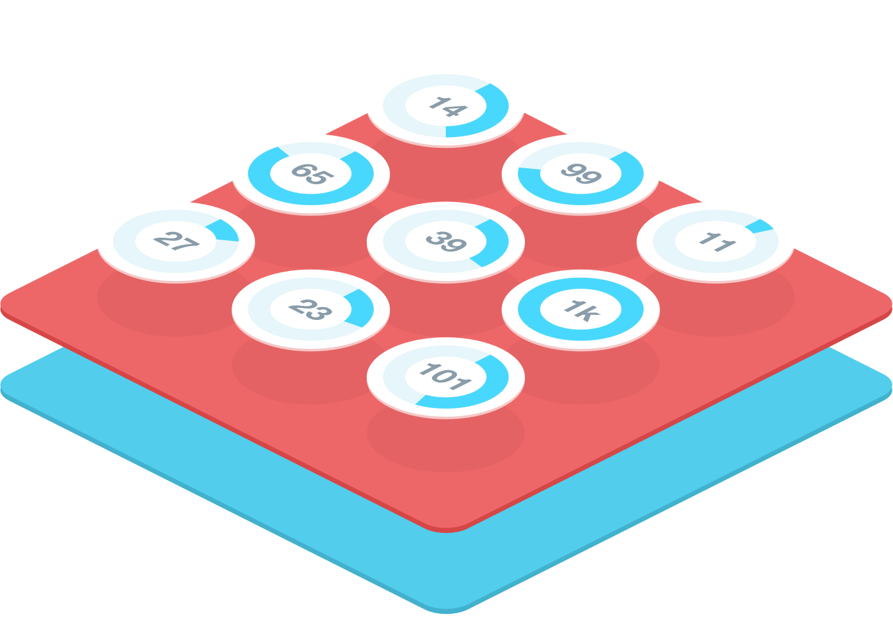
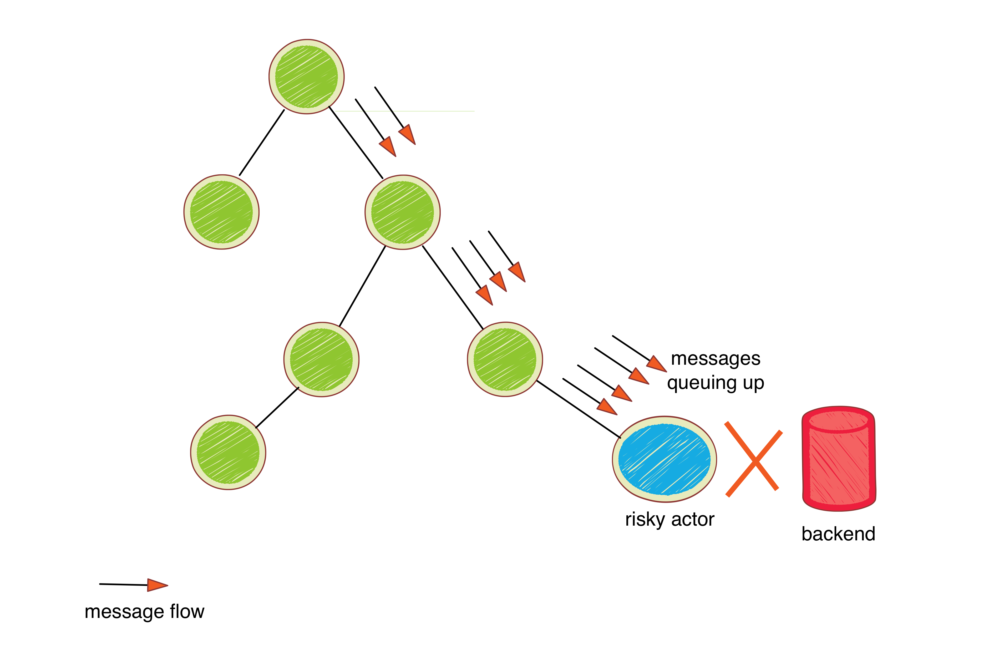

Akka workshop
firstname lastname, Typesafe
XYZ company, New York, 2013-07-22
Contact: youremail@typesafe.com
Agenda
- Akka design considerations
- Intro to patterns
- Patterns
Akka design considerations
Single responsibility principle
Each actor should do one thing and one thing only. If actors follow SRP principle then it becomes easier to define fault strategy.
Error kernel pattern
Save guard your sensitive data. If an actor stores an application state you don't want to loose make sure you don't perform any risky operation inside that actor.
Add explicit supervisor
Inject explicit supervisor actor to the actor hierarchy to have fine-grained control over supervisor strategy
Choose Pull over push
Most common approach of work distribution in akka world is push based but in reality pull based workers scale better
Separate blocking vs. non-blocking operations
Blocking operations should be avoided but if you have to have them make sure you use separate dispatchers for them
Future vs. Actor
Actors are great when you need work distribution and mutable state. Futures are great you want to compose small asynchronous operations
Separate your business logic from actors
Implement business logic in separate traits so they are easily testable.
Intro to patterns
What is Akka pattern?
Akka pattern is a general reusable solution to commonly occurring scalability problems faced by real world Akka applications.
Akka pattern
Its a template used in various situations to solve a particular scalability problem. Each pattern can have many implementations.
Workshop - Akka patterns
- Circuit breaker
- Message throttling
- Clustered router
- Pull based master/worker model
- Tracking mailbox
Circuit breaker
Akka actor hierarchy

The problem - end point goes down
How would you handle this?
Discuss possible options
Fail fast with Circuit breaker

Akka Circuit breaker implementation
Message throttling
Message throttling
TODO
Clustered router
Clustered router
TODO
Pull based master/worker model
Pull based master/worker model
TODO
Tracking mailbox
Tracking mailbox
TODO